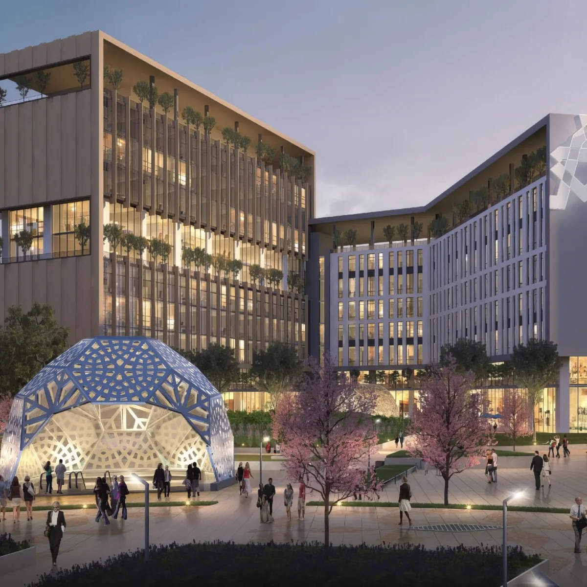

Ön başvurudan faaliyete.
Fintek projelerinizi gerçeğe dönüştürmek için buradayız. Teknoloji Geliştirme Bölgesi ve İFM avantajlarından siz de yararlanın.

Üç aşama, tek yol.
Fintech Zone bünyesinde yer almak isteyen Ar-Ge proje sahipleri; Ön Başvuru, Başvuru ve Değerlendirme, Kabul ve Sözleşme aşamalarını tamamlayarak teknoparka dahil olur.
Ön Başvuru ve Birebir Görüşme
Fintech Zone İstanbul'a yapacağınız ön başvuru ekibimiz tarafından incelenir. Projenizi ve ihtiyaçlarınızı daha yakından değerlendirmek üzere çevrim içi veya yüz yüze birebir görüşme gerçekleştirilir.
portal.fintech.zoneAr-Ge Proje Başvurusu
Ön değerlendirmesi olumlu sonuçlanan girişim ve firmalar, portal üzerinden Ar-Ge proje başvurularını tamamlayarak değerlendirme sürecine dahil olur.
Hakem Heyeti Değerlendirmesi
Ar-Ge proje başvurusu, alanında uzman hakemler tarafından teknik, yenilikçi ve ticari kriterler doğrultusunda değerlendirilir. Hakem değerlendirmesinin sonuçlanmasıyla birlikte, İstanbul Finans Merkezi Katılımcı Belgesi başvuru süreci yürütülür.
İFM Katılımcı Belgesi Başvurusu
İstanbul Finans Merkezi'nde faaliyet göstermek ve 7412 sayılı İstanbul Finans Merkezi Kanunu kapsamındaki teşvik, muafiyet ve avantajlardan yararlanmak üzere İstanbul Finans Merkezi Katılımcı Belgesi başvurusu gerçekleştirilir.
Yer Tahsisi ve Kira Sözleşmesi
Değerlendirme süreci olumlu sonuçlanan girişim ve firmalar için ihtiyaçlarına uygun çalışma alanının tahsisi gerçekleştirilir ve kira sözleşmesi süreci tamamlanır. Gerekli koşulların sağlanmasının ardından İstanbul Finans Merkezi Katılımcı Belgesi düzenlenir.
Faaliyetlere Başlanması
Tüm başvuru, değerlendirme ve yer tahsisi süreçlerinin tamamlanmasının ardından firmalar Fintech Zone İstanbul'da faaliyetlerine başlayabilir.


Başvuru koşulları
Başvuru öncesinde ve sonrasında girişimcilerimizin merak ettikleri konuları bu bölüme topladık.
Başvuru şartları
Başvuru yapabilmek için iki kritik şart bulunmaktadır: Öncelikle, fintek alanında Ar-Ge, yazılım veya teknoloji içeren bir projeye sahip olmanız gerekmektedir. İkincisi, fintek sektöründe faaliyet gösteren veya gelecekte bu alanda faaliyet göstermeyi planlayan bir firma olmanızdır.
Ön BaşvuruFirmanızı henüz kurmadıysanız
Evet, firmanızı kurmadan da başvuru yapabilirsiniz. Başvuru süreciniz devam ederken şirket kurulumunuzu tamamlayabilirsiniz.
Değerlendirme ölçütleri
Hakemler ve komisyon üyeleri başvuruları değerlendirirken öncelikli olarak Ar-Ge projesinin inovasyon kapasitesi, iş planı ve yönetimi, rekabet avantajı, finansal uygulanabilirliği, ticarileşme ve piyasa potansiyeli, sürdürülebilirlik ve etkisi gibi ölçütleri dikkate alacaktır.
- İnovasyon kapasitesi
- İş planı ve yönetimi
- Rekabet avantajı
- Finansal uygulanabilirlik
- Ticarileşme ve piyasa potansiyeli
- Sürdürülebilirlik ve etki
Ücret
Ön başvuru sürecinde herhangi bir ödeme yapmanız gerekmemektedir. Bununla birlikte, Ar-Ge firma başvurusunda belirli bir ödeme yapmanız gerekebilecektir. İlgili ücretler zaman içinde değişebilir, güncel bilgiye sahip olmak için bizimle iletişime geçiniz.
İletişime geçinÇalışma alanları
Fintech Zone İstanbul olarak farklı büyüklüklerde çalışma alanları sunmaktayız. Kiralamak istediğiniz çalışma alanı ve ihtiyaçlarınıza göre, farklı metrekare seçenekleri bulunmaktadır. Daha detaylı bilgi edinmek için bizimle iletişime geçiniz.
Başvuru sürecinde yanınızdayız
Alanında uzman ekibimiz ön başvuru aşamasından itibaren ihtiyaç duyduğunuz her durumda gerekli desteği sağlamaktadırlar.
Fintek projenizi geliştirmek için ideal merkez
Ekosistemin merkezinde bulunmanın ve stratejik konumun avantajıyla projenizi geleceğe ve globale taşıyın!
Geleceği hedefleyen strateji ile buradayız
Ülkemizden global pazarlara, hinterlandımızda yer alan ülkelerden Türkiye'ye girişim transfer etmeyi hedefleyen stratejiyle geleceğe hazırlanıyoruz.
Fintech Zone İstanbul'a katılmak için ne yapmalıyım?
Fintech Zone İstanbul'a sadece finansal teknoloji firmaları (fintek) mı başvuru yapabilir?
Başvuru formunu ilettikten sonra değerlendirme süreci ve sonraki aşamalar nasıl ilerliyor?
Teknopark'a dahil olduğumda ne tür imkan ve avantajlar elde edebilirim?
- Türkiye ve yurt dışında faaliyet gösteren finansal teknoloji firmaları ile iş birliği,
- Vergi avantajlarından faydalanma,
- 7/24 kullanıma açık nitelikli ofisler,
- Teknik ve teknolojik altyapı desteği,
- Sosyal etkileşim alanları,
- Global veri tabanlarına erişim,
- Finansal aktörler ile iş birliği.